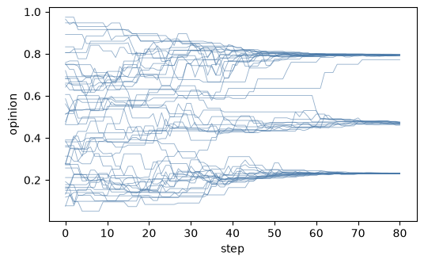
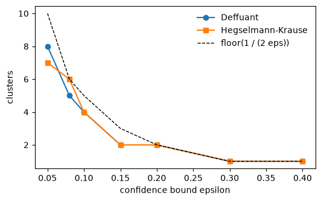

Sociology and political science: consensus, polarisation and culture#
When do people who influence each other end up agreeing, and when do they split into camps?
Bounded-confidence models answer with one parameter, the confidence bound epsilon:
people only listen to those whose opinion is within epsilon of their own. This tutorial
runs the Deffuant and
Hegselmann-Krause models from the zoo, then the
Axelrod model of cultural regions.
Start a project from any of them with modelly zoo copy deffuant my_opinions (the same
command in bash and PowerShell).
Build and run#
Five hundred voters with opinions uniform on [0, 1]. Every step pairs them at random; a
pair closer than epsilon moves each opinion halfway to the other (mu = 0.5).
import numpy as np
import matplotlib.pyplot as plt
from modelly.zoo.deffuant.model import Deffuant, DeffuantScenario
model = Deffuant(DeffuantScenario(rng=1, epsilon=0.15))
history = [model.voters.opinion.copy()]
for _ in range(80):
model.step()
history.append(model.voters.opinion.copy())
print(f"{model.n_clusters()} opinion clusters")
3 opinion clusters
Plot: opinions over time#
history = np.array(history)
fig, ax = plt.subplots(figsize=(6, 3.5))
ax.plot(history[:, ::10], color="#4878a8", lw=0.6, alpha=0.6)
ax.set_xlabel("step")
ax.set_ylabel("opinion");

Analysis: consensus versus the confidence bound#
The classic result is that the number of clusters is about 1 / (2 epsilon), down to
consensus once epsilon is above about a quarter. Hegselmann-Krause, where everybody
averages every opinion within the bound at once, gives the same picture.
from modelly.zoo.hegselmann_krause.model import HegselmannKrause, HKScenario
bounds = [0.05, 0.08, 0.1, 0.15, 0.2, 0.3, 0.4]
rows = []
for eps in bounds:
deffuant = Deffuant(DeffuantScenario(rng=2, epsilon=eps))
deffuant.run()
hk = HegselmannKrause(HKScenario(rng=2, epsilon=eps))
hk.run()
rows.append((deffuant.n_clusters(), hk.n_clusters()))
fig, ax = plt.subplots(figsize=(6, 3.5))
ax.plot(bounds, [r[0] for r in rows], "o-", label="Deffuant")
ax.plot(bounds, [r[1] for r in rows], "s-", label="Hegselmann-Krause")
ax.plot(bounds, [max(1, int(1 / (2 * e))) for e in bounds], "k--", lw=1, label="floor(1 / (2 eps))")
ax.set_xlabel("confidence bound epsilon")
ax.set_ylabel("clusters")
ax.legend(frameon=False);

Culture as several opinions: Axelrod#
Axelrod gives every site of a grid features cultural features, each with one of traits
values. Neighbours interact with a probability equal to the share of features they already
have in common, and copy one trait. Similarity breeds more similarity, so the map freezes
into regions; the more traits per feature, the more regions survive.
from modelly.zoo.axelrod.model import Axelrod, AxelrodScenario
traits = [2, 5, 10, 15, 30]
regions = []
for q in traits:
culture = Axelrod(AxelrodScenario(rng=3, traits=q))
culture.run()
regions.append(culture.n_regions())
dict(zip(traits, regions))
{2: 1, 5: 1, 10: 8, 15: 13, 30: 65}
Going further#
Seed a few stubborn agents (
mu = 0) and see how far they pull the consensus.Run Deffuant on a network: pair only neighbours.
Use
modelly.batch.run_gridto sweepepsilonwith ten seeds each, and plot the mean and spread of the cluster count.